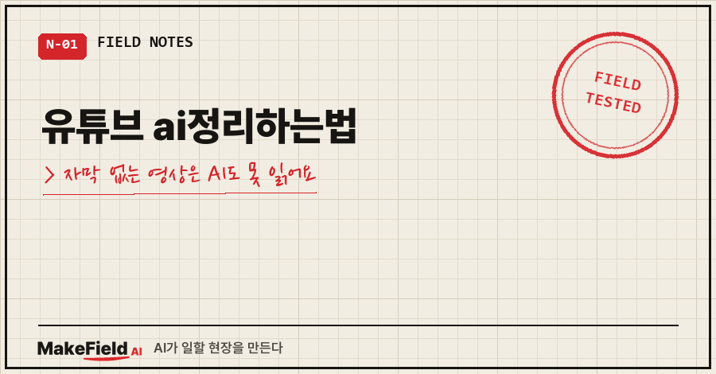
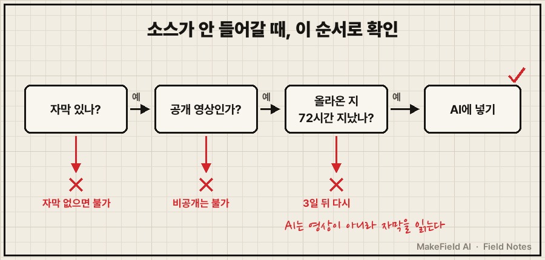
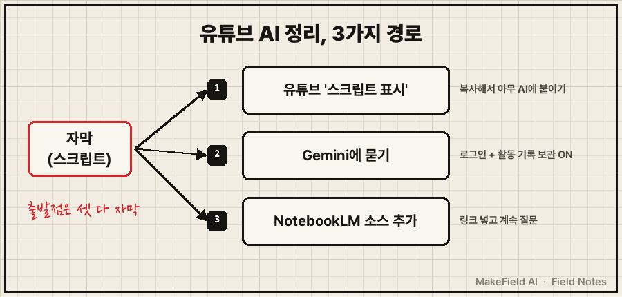
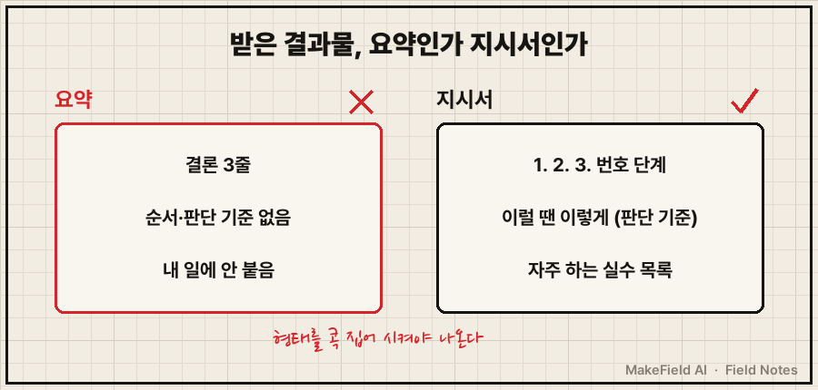

유튜브 ai정리하는법의 답은 하나예요. AI는 영상을 '보는' 게 아니라 자막(스크립트)을 '읽기' 때문에, 자막을 먼저 손에 넣고 그 글을 AI한테 지시서로 바꾸게 하면 됩니다.
공식 문서 기준으로 정리하면 이래요. 유튜브는 자막이 있는 동영상에서만 '스크립트 표시'를 보여 주고, NotebookLM은 자막이 있는 공개 동영상의 텍스트 스크립트만 가져옵니다(2026년 10월 확인). 자막이 없으면 어느 도구로도 정리가 안 된다는 뜻이죠.
저는 자동화랑 데이터 만지는 일을 15년째 하는 현장 엔지니어예요. 지난여름에 좋은 강의 영상을 몇 번씩 다시 돌려보다 지쳐서, 영상을 AI 지식으로 옮기는 방식을 만들었어요. 왜 요약이 아니라 '이식'인지는 앞 글에 썼고, 오늘은 사람들이 실제로 막히는 "그래서 어디를 눌러야 하냐"만 다룹니다.
1. "요약해 줘" 했는데 이런 화면이 나와요
유튜브 AI 정리를 처음 해 보면 대개 이 셋 중 하나에 걸려요.
- 영상 설명란을 다 펼쳐도 '스크립트 표시' 버튼이 없다
- NotebookLM에 링크를 넣었는데 소스가 안 들어간다
- 정리는 됐는데 매끈한 3줄 요약만 나와서 쓸 데가 없다
앞의 둘은 자막 문제, 마지막은 지시 문제예요. 원인이 다르니 해결도 따로 봐야 합니다.
2. 원인은 거의 항상 '자막'이에요
AI가 읽는 건 영상이 아니라 자막 텍스트입니다. NotebookLM 도움말은 "동영상의 텍스트 스크립트만" 가져오고, 음성이 없는 동영상은 지원하지 않는다고 적어 둡니다(→ https://support.google.com/gemininotebook/answer/16215270?hl=ko).
소스가 안 들어가는 경우를 공식 조건으로 추리면 네 가지예요.
| 막히는 경우 | 공식 조건 |
|---|---|
| 자막이 없는 영상 | 업로드 자막 또는 자동 생성 자막이 있어야 함 |
| 비공개·일부공개 영상 | 공개 동영상만 지원 |
| 방금 올라온 영상 | 72시간 이내 업로드 영상은 가져올 수 없음 |
| 초장편 강의 | 자막이 50만 단어(영문 기준)를 넘으면 제한 |

3. 유튜브 ai정리하는법, 3가지 경로
제가 처음 할 땐 제미나이(Gemini)한테 영상 내용을 뽑게 했어요. 해 보니 도구보다 순서가 중요하더라고요. 지금 공식적으로 쓸 수 있는 길은 세 갈래입니다.

경로 ① 유튜브에서 스크립트를 직접 꺼내기
- 영상 아래 설명란을 펼친다.
- '스크립트 표시'를 누른다. 자막이 재생에 맞춰 흘러가고, 줄을 누르면 그 장면으로 이동해요(→ https://support.google.com/youtube/answer/15930243?hl=ko).
- 스크립트를 긁어 복사해 쓰는 AI 대화창에 붙인다.
어느 AI에나 넣을 수 있어서 제일 범용적이에요. 대신 긁고 붙이는 손품이 들어요.
경로 ② Gemini한테 영상에 대해 묻기
Gemini 도움말의 예시는 이런 흐름이에요. 주제로 동영상을 찾게 한 뒤 "첫 번째 동영상을 요약해 줘"라고 묻는 식이죠(→ https://support.google.com/gemini/answer/16622858?hl=ko). 조건이 있어요. 로그인해야 하고, 활동 기록 보관이 켜져 있어야 하며, Live 대화에서는 안 됩니다.
경로 ③ NotebookLM에 링크를 소스로 넣기
- 노트북을 열고 왼쪽 '소스 추가'를 누른다.
- 유튜브 링크를 붙인다.
- 들어간 스크립트를 놓고 계속 질문한다.
한 번 넣어 두면 그 노트북 안에서 계속 물을 수 있어서, 강의 여러 편을 묶어 둘 때 편해요. 단, 원본 영상이 삭제되거나 비공개로 바뀌면 30일 안에 소스도 자동 삭제된다고 도움말에 적혀 있어요. 중요한 건 결과물을 따로 저장해 두세요.
4. 자막을 넣은 다음, 지시는 이렇게
여기서 제가 한 번 걸렸어요. 처음엔 대충 "정리해 줘"라고 했더니 또 매끈한 요약이 나왔거든요. 결과물의 '형태'를 콕 집어 주고 나서야 쓸 만한 게 나왔습니다.
이 스크립트를 내가 나중에 그대로 따라 할 수 있는 단계별 지시서로 바꿔줘.
결론 요약 말고, 작업 순서와 판단 기준을 살려줘.
체크리스트, 순서도, 자주 하는 실수 목록 형태로.이렇게 받은 지시서를 쓰는 AI의 지식 파일이나 프로젝트에 넣어 두면, 다음부터는 그 방식으로 답해요. 이 저장 단계는 앞 글 4절에 자세히 있어요.

5. 제대로 됐는지 확인하는 법
결과물을 받으면 세 가지만 보세요.
- 번호 붙은 단계가 있는가 (없으면 요약이에요)
- "이럴 땐 이렇게" 같은 판단 기준이 남아 있는가
- 스크립트를 한 번 훑었을 때 자막 오타로 엉뚱해진 단어가 없는가
저도 화면 시연이 핵심인 영상은 이 방식이 반쪽이었어요. 말로 설명하지 않고 화면만 보여 주는 대목은 자막에 안 남거든요. 방법론·강의형 영상에서 제일 잘 먹힙니다.
6. 같은 증상, 다른 경우
- 정리한 지식을 AI가 왜 실제로 쓰게 되는지 → 유튜브 강의 AI로 정리하는 법
- AI가 정리해 준 답을 파일로 남기는 방법 → AI 답변 저장 방법
- 쌓인 지식 파일이 서로 꼬일 때 → AI 지식베이스 파일 구조
Q. '스크립트 표시' 버튼이 안 보여요.
유튜브 도움말 기준으로 스크립트는 자막이 있는 동영상에서만 볼 수 있어요. 자막이 없는 영상이면 버튼 자체가 없고, NotebookLM에도 소스로 안 들어갑니다.
Q. NotebookLM이 방금 올라온 영상을 못 읽어요.
공식 도움말에 72시간 이내 업로드 영상은 가져올 수 없다고 나와 있어요. 사흘 뒤에 다시 넣거나, 자막이 있다면 경로 ①로 스크립트를 복사해 붙이면 됩니다.
Q. 셋 중 뭘 써야 하나요?
한 편을 빨리 정리하려면 ①, 여러 강의를 묶어 계속 물을 거면 ③이 편해요. 어느 쪽이든 마지막에 지시서 형태로 받아 저장하는 게 핵심입니다.
혹시 '스크립트 표시' 버튼이 끝내 안 보였던 영상, 어떤 종류였나요? 도움말 기준으로는 자막이 없는 영상이에요. 이렇게 옮겨 둔 지식으로 실제 일을 굴리는 과정은 makefield.ai에 차곡차곡 적고 있어요.
출처
- 유튜브 고객센터, 동영상 스크립트 보기 → https://support.google.com/youtube/answer/15930243?hl=ko
- NotebookLM 고객센터, 노트북에 새 소스 추가 또는 찾기 → https://support.google.com/gemininotebook/answer/16215270?hl=ko&co=GENIE.Platform%3DDesktop
- Gemini 앱 고객센터, Gemini 앱에서 YouTube 콘텐츠 찾기 및 질문하기 → https://support.google.com/gemini/answer/16622858?hl=ko&co=GENIE.Platform%3DDesktop
태그: #유튜브ai정리하는법 #유튜브AI정리 #유튜브스크립트 #유튜브자막추출 #유튜브요약AI #NotebookLM #노트북LM유튜브 #제미나이유튜브 #Gemini #영상AI정리 #AI공부법 #AI활용법 #생성형AI #AI지식관리 #MakeFieldAI